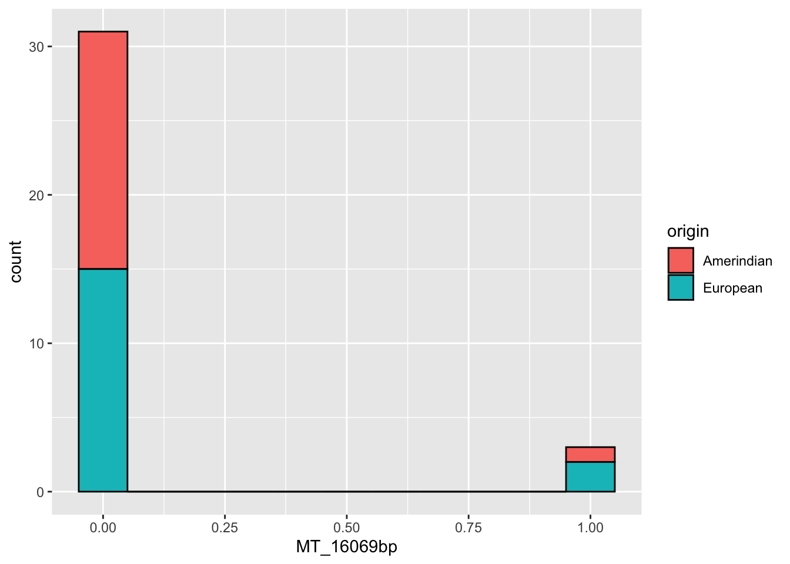
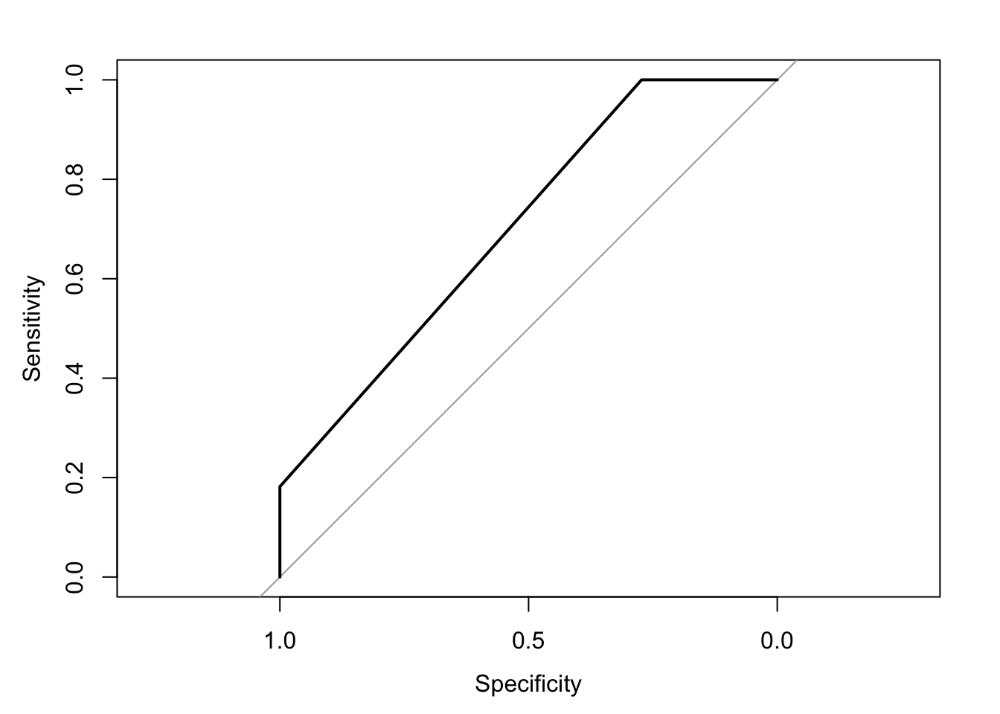

This pipeline classifies the origin of the genotype based on the genotype information extracted from VCF files using a binary logistic regression model. In section 3.3 below, I discuss a potential approach to improve the Sensitivity rates of this framework using the divide and conquer approach. The solution includes using genomic regions in ranges or intervals instead of SNPs. In other words, we can use a range of SNPs as the genotypes, instead of a single SNP as the genotype. IN this way the Machine Learning algorithm will have a chance to look at several ranges or a range of base-pairs instead of a single reagion of a SNP. This might be a solution to the sensitivity problem. Because of the problem I faced running the for loop, the genotypes were constructed appending the extraction of the vcf files. This notebook is based on the tutorial from RBloggers (2020).
The chunk below is used to calculate the time necessary to run this notebook.
start_time <- Sys.time()
Load libraries with functions necessary to input data for the present analysis.
library(expss)
library(dplyr)
library(kableExtra)
library(ggplot2)
library(caret)
library(pROC)
Load data that was created by appending the genotypes from the vcf files.
mt_features_df <- read.table("./data/mt_dcast_appended_binary.txt", header = T)
dim(mt_features_df)## [1] 34 6
Look at features in the mitochondria genotype object. Each column is a feature. In R, columns are called variables. In R, a table can be called a data-frame.
kable(mt_features_df, caption="Mitochondrial Features") %>%
kable_styling("striped", full_width = F, font_size = 12) %>%
scroll_box(width = "100%", height = "600px")| fastaID | origin | MT_16069bp | MT_16086bp | MT_16093bp | MT_16111bp |
|---|---|---|---|---|---|
| AF243627 | Amerindian | 0 | 0 | 0 | 1 |
| AF243628 | Amerindian | 0 | 0 | 0 | 0 |
| AF243629 | Amerindian | 0 | 0 | 0 | 0 |
| AF243630 | Amerindian | 0 | 0 | 0 | 0 |
| AF243631 | Amerindian | 0 | 0 | 0 | 0 |
| AF243632 | Amerindian | 0 | 0 | 0 | 0 |
| AF243633 | Amerindian | 0 | 0 | 0 | 0 |
| AF243700 | Amerindian | 0 | 0 | 0 | 1 |
| AF243701 | Amerindian | 0 | 0 | 0 | 0 |
| AF243702 | Amerindian | 0 | 0 | 0 | 0 |
| AF243703 | Amerindian | 0 | 0 | 0 | 0 |
| AF243704 | Amerindian | 0 | 0 | 0 | 0 |
| AF243705 | Amerindian | 0 | 0 | 0 | 0 |
| AF243706 | Amerindian | 0 | 0 | 0 | 1 |
| AF243707 | Amerindian | 0 | 0 | 0 | 0 |
| AF243708 | Amerindian | 1 | 0 | 0 | 0 |
| AF243709 | Amerindian | 0 | 0 | 0 | 0 |
| AF243780 | European | 0 | 0 | 0 | 0 |
| AF243781 | European | 0 | 0 | 0 | 0 |
| AF243782 | European | 0 | 0 | 0 | 0 |
| AF243783 | European | 0 | 0 | 0 | 0 |
| AF243784 | European | 0 | 0 | 0 | 0 |
| AF243785 | European | 1 | 0 | 0 | 0 |
| AF243786 | European | 0 | 0 | 0 | 0 |
| AF243787 | European | 0 | 0 | 0 | 0 |
| AF243788 | European | 0 | 0 | 0 | 0 |
| AF243789 | European | 0 | 0 | 1 | 0 |
| AF243790 | European | 0 | 0 | 0 | 0 |
| AF243791 | European | 0 | 1 | 0 | 0 |
| AF243792 | European | 0 | 0 | 0 | 0 |
| AF243793 | European | 0 | 0 | 0 | 0 |
| AF243794 | European | 0 | 0 | 0 | 0 |
| AF243795 | European | 1 | 0 | 0 | 0 |
| AF243796 | European | 0 | 0 | 0 | 0 |
Make origin a factor
mt_features_df$origin <- as.factor(mt_features_df$origin)
# mt_features_df <- mt_features_df %>% select(-c("GenBankID"))
mt_features_df <- mt_features_df %>% select(-c("fastaID"))
ggplot(mt_features_df, aes(MT_16069bp)) +
geom_histogram(aes(fill = origin), color = "black", binwidth = 0.1)
Let’s create a partition of the dataset. We are splitting the data into train and test. We are partitioning 60% of the samples to the train group and 40% to the test group.
To solve the genotype error, I read the Stackoverflow (2021) reference. To deal with levels that I was not familiar in the dataset, I read the Stackoverflow (2014) reference.
set.seed(2015)
index <- createDataPartition(mt_features_df$origin, p = .60, list = FALSE)
class(index)## [1] "matrix" "array"index## Resample1
## [1,] 1
## [2,] 2
## [3,] 4
## [4,] 6
## [5,] 7
## [6,] 8
## [7,] 9
## [8,] 10
## [9,] 11
## [10,] 12
## [11,] 14
## [12,] 18
## [13,] 19
## [14,] 20
## [15,] 21
## [16,] 25
## [17,] 26
## [18,] 27
## [19,] 28
## [20,] 31
## [21,] 32
## [22,] 33train_mt <- mt_features_df[index, ]
train_mt
Look at counts per category
cross_cases(train_mt, origin)| #Total | |
|---|---|
| origin | |
| Amerindian | 11 |
| European | 11 |
| #Total cases | 22 |
Build test dataset
test_mt <- mt_features_df[-index, ]
test_mt
Training the model
logistic_model_mt <- glm(origin ~ ., family = binomial(), train_mt)
# mod2$xlevels[["y"]] <- union(mod2$xlevels[["y"]], levels(test$y))
Checking the model
summary(logistic_model_mt)##
## Call:
## glm(formula = origin ~ ., family = binomial(), data = train_mt)
##
## Coefficients: (1 not defined because of singularities)
## Estimate Std. Error z value Pr(>|z|)
## (Intercept) 0.1178 0.4859 0.242 0.808
## MT_16069bp 18.4483 6522.6386 0.003 0.998
## MT_16086bp NA NA NA NA
## MT_16093bp 18.4483 6522.6386 0.003 0.998
## MT_16111bp -18.6839 3765.8472 -0.005 0.996
##
## (Dispersion parameter for binomial family taken to be 1)
##
## Null deviance: 30.498 on 21 degrees of freedom
## Residual deviance: 23.508 on 18 degrees of freedom
## AIC: 31.508
##
## Number of Fisher Scoring iterations: 17
Sigmoid function, p = exp(-0.591532)/(1+exp(-0.591532))
# Predicting in the test dataset
pred_prob_mt <- predict(logistic_model_mt, test_mt, type="response")## Warning in predict.lm(object, newdata, se.fit, scale = 1, type = if (type == :
## prediction from rank-deficient fit; attr(*, "non-estim") has doubtful casespred_prob_mt## 3 5 13 15 16 17 22 23
## 0.5294118 0.5294118 0.5294118 0.5294118 1.0000000 0.5294118 0.5294118 1.0000000
## 24 29 30 34
## 0.5294118 0.5294118 0.5294118 0.5294118
## attr(,"non-estim")
## 29
## 10
This is based on notebook confusion-table.Rmd
pred_prob, from above, is a factor
predictions_mt <- cbind(data.frame(train_preds=pred_prob_mt,
test_mt$origin))
predictions_mtThen the confusion matrix can be calculated
cm <- caret::confusionMatrix(predictions_mt$train_preds, predictions_mt$test_mt.origin)This is the error
Error in `match.arg()`:
! 'arg' should be one of "link", "response", "terms"
Backtrace:
1. stats::predict(logistic_model_mt, test_mt, type = "raw")
2. stats::predict.glm(logistic_model_mt, test_mt, type = "raw")
3. base::match.arg(type)
Execution halted
It does not make sense the labels to be America or Africa for this notebook since here we are using currently, Amerindian and European genotypes of mitochondrial Brazilian sequences. Therefore I am commenting on that line that uses the probability value to set the labels up. To update the labels I will make America the Amerindian label and Africa the European label. My first impression was that the accuracy increased significantly.
# Converting from probability to actual output
# train_mt$pred_class <- ifelse(logistic_model_mt$fitted.values >= 0.5, "America", "Africa")
train_mt$pred_class <- ifelse(logistic_model_mt$fitted.values >= 0.5, "Amerindian", "European")
dim(train_mt)## [1] 22 6train_mt# Generating the classification table
ctab_train_mt <- table(train_mt$origin, train_mt$pred_class)
ctab_train_mt##
## Amerindian European
## Amerindian 8 3
## European 11 0
# Converting from probability to actual output
# test_mt$pred_class <- ifelse(pred_prob_mt >= 0.5, "America", "Africa")
test_mt$pred_class <- ifelse(pred_prob_mt >= 0.5, "Amerindian", "European")
# Generating the classification table
ctab_test_mt <- table(test_mt$origin, test_mt$pred_class)
ctab_test_mt##
## Amerindian
## Amerindian 6
## European 6
\[\begin{align*} Accuracy & = \frac{TP + TN}{TN + FP + FN + TP} \\ \end{align*}\]
Accuracy in Training dataset
accuracy_train_mt <- sum(diag(ctab_train_mt))/sum(ctab_train_mt)*100
accuracy_train_mt## [1] 36.36364
Accuracy in Test dataset
accuracy_test_mt <- sum(diag(ctab_test_mt))/sum(ctab_test_mt)*100
accuracy_test_mt## [1] 50
A model is considered fairly good if the model accuracy is greater than 70%.
\[\begin{align*} Misclassification Rate & = \frac{FP+FN}{TN + FP + FN + TP} \\ \end{align*}\]
\[\begin{align*} Sensitivity & = \frac{TP}{FN + TP} \\ \end{align*}\]
Recall in Train dataset
Recall <- (ctab_train_mt[2, 2]/sum(ctab_train_mt[2, ]))*100
Recall## [1] 0ctab_test_mt##
## Amerindian
## Amerindian 6
## European 6
Recall in Test dataset
Recall_test <- (ctab_test_mt[2, 2]/sum(ctab_test_mt[2, ]))*100
Recall_test
One potential direction to improve sensitivity in the train and test datasets is to use haplogroups instead of SNPs. Take for example the Huntington’s disease (HD) diagnosis. A person is positive if they have more than 35 CAG repeats. If for example we take a haplogroup of range of 50 bp, we can classify people with 40 CAG repeats as positive whereas individuals that have the haplogroup with less than 40 repeats are negative for HD.
Using this approach we can divide the genome into smaller segments and the algorithm will have to only work in these segments. We can therefore, use the divide and conquer approach to diagnose the disease using genotype information.
\[\begin{align*} TNR & = \frac{TN}{TN + FP} \\ \end{align*}\]
TNR in Train dataset
TNR <- (ctab_train_mt[1, 1]/sum(ctab_train_mt[1, ]))*100
TNR## [1] 72.72727
\[\begin{align*} TNR & = \frac{TP}{FP + TP} \\ \end{align*}\]
# Precision = TP/FP + TP
# Precision in Train dataset
Precision <- (ctab_train_mt[2, 2]/sum(ctab_train_mt[, 2]))*100
Precision## [1] 0
F_Score <- (2 * Precision * Recall / (Precision + Recall))/100
F_Score
roc_mt <- roc(train_mt$origin, logistic_model_mt$fitted.values)## Setting levels: control = Amerindian, case = European## Setting direction: controls < casesroc_mt##
## Call:
## roc.default(response = train_mt$origin, predictor = logistic_model_mt$fitted.values)
##
## Data: logistic_model_mt$fitted.values in 11 controls (train_mt$origin Amerindian) < 11 cases (train_mt$origin European).
## Area under the curve: 0.7025plot.roc(roc_mt)
auc(roc_mt)## Area under the curve: 0.7025
Note that per the Wikipedia (2024) article, our classifier shows better results than random guess, which is a good start.
library(InformationValue)
Concordance(logistic_model_mt$y,logistic_model_mt$fitted.values)## $Concordance
## [1] 0.4049587
##
## $Discordance
## [1] 0.5950413
##
## $Tied
## [1] 0
##
## $Pairs
## [1] 121
In this reference for the Confusion Matrix according to CARET (2023), we can find the equations for sensitivity and accuracy.
sessionInfo()## R version 4.4.1 (2024-06-14)
## Platform: aarch64-apple-darwin20
## Running under: macOS Big Sur 11.4
##
## Matrix products: default
## BLAS: /Library/Frameworks/R.framework/Versions/4.4-arm64/Resources/lib/libRblas.0.dylib
## LAPACK: /Library/Frameworks/R.framework/Versions/4.4-arm64/Resources/lib/libRlapack.dylib; LAPACK version 3.12.0
##
## locale:
## [1] en_US.UTF-8/en_US.UTF-8/en_US.UTF-8/C/en_US.UTF-8/en_US.UTF-8
##
## time zone: America/Chicago
## tzcode source: internal
##
## attached base packages:
## [1] stats graphics grDevices utils datasets methods base
##
## other attached packages:
## [1] InformationValue_1.2.3 pROC_1.18.5 caret_6.0-94
## [4] lattice_0.22-6 expss_0.11.6 lubridate_1.9.3
## [7] forcats_1.0.0 purrr_1.0.2 readr_2.1.5
## [10] tidyr_1.3.1 ggplot2_3.5.1 tidyverse_2.0.0
## [13] microdatasus_2.3.3 data.table_1.16.0 reshape2_1.4.4
## [16] tibble_3.2.1 stringr_1.5.1 dplyr_1.1.4
## [19] kableExtra_1.4.0 maditr_0.8.4 ape_5.8
##
## loaded via a namespace (and not attached):
## [1] tidyselect_1.2.1 viridisLite_0.4.2 timeDate_4041.110
## [4] farver_2.1.2 fastmap_1.2.0 digest_0.6.37
## [7] rpart_4.1.23 timechange_0.3.0 lifecycle_1.0.4
## [10] survival_3.7-0 magrittr_2.0.3 compiler_4.4.1
## [13] rlang_1.1.4 sass_0.4.9 tools_4.4.1
## [16] utf8_1.2.4 yaml_2.3.10 knitr_1.48
## [19] labeling_0.4.3 htmlwidgets_1.6.4 plyr_1.8.9
## [22] xml2_1.3.6 withr_3.0.1 stats4_4.4.1
## [25] nnet_7.3-19 grid_4.4.1 fansi_1.0.6
## [28] future_1.34.0 colorspace_2.1-1 globals_0.16.3
## [31] scales_1.3.0 iterators_1.0.14 MASS_7.3-61
## [34] cli_3.6.3 rmarkdown_2.28 crayon_1.5.3
## [37] generics_0.1.3 future.apply_1.11.2 rstudioapi_0.16.0
## [40] tzdb_0.4.0 cachem_1.1.0 splines_4.4.1
## [43] parallel_4.4.1 matrixStats_1.4.1 vctrs_0.6.5
## [46] hardhat_1.4.0 Matrix_1.7-0 jsonlite_1.8.9
## [49] hms_1.1.3 htmlTable_2.4.3 listenv_0.9.1
## [52] systemfonts_1.1.0 foreach_1.5.2 fontawesome_0.5.2
## [55] gower_1.0.1 jquerylib_0.1.4 recipes_1.1.0
## [58] parallelly_1.38.0 glue_1.8.0 codetools_0.2-20
## [61] stringi_1.8.4 gtable_0.3.5 munsell_0.5.1
## [64] pillar_1.9.0 htmltools_0.5.8.1 ipred_0.9-15
## [67] lava_1.8.0 R6_2.5.1 evaluate_1.0.0
## [70] highr_0.11 backports_1.5.0 bslib_0.8.0
## [73] class_7.3-22 Rcpp_1.0.13 prodlim_2024.06.25
## [76] svglite_2.1.3 nlme_3.1-166 checkmate_2.3.2
## [79] xfun_0.48 ModelMetrics_1.2.2.2 pkgconfig_2.0.3
end_time <- Sys.time()
end_time - start_time## Time difference of 0.38571 secs